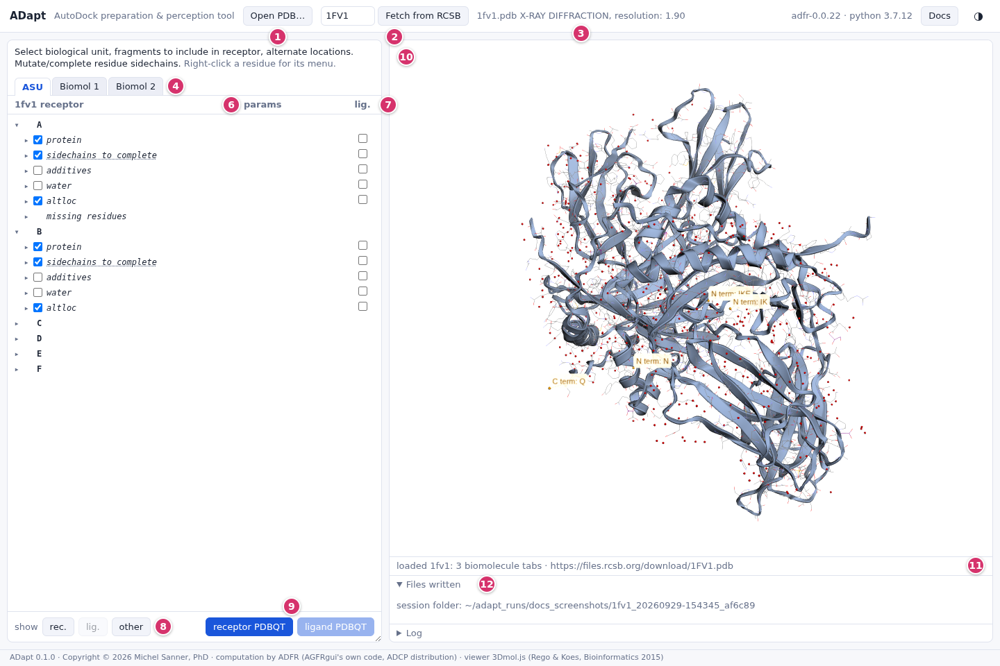
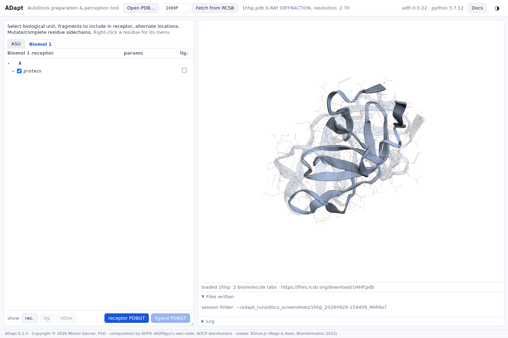
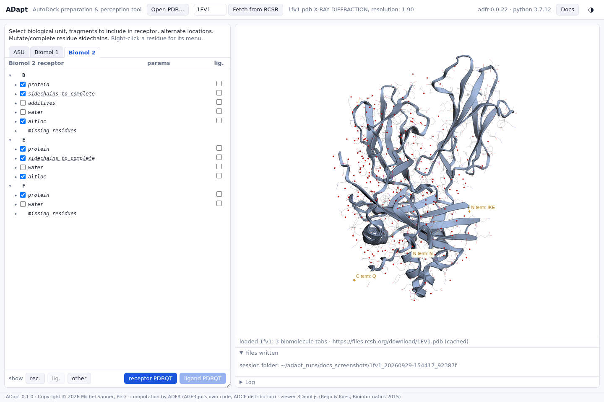
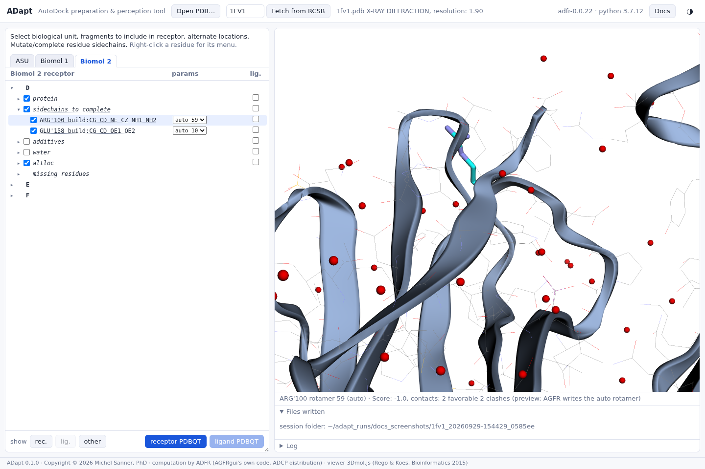
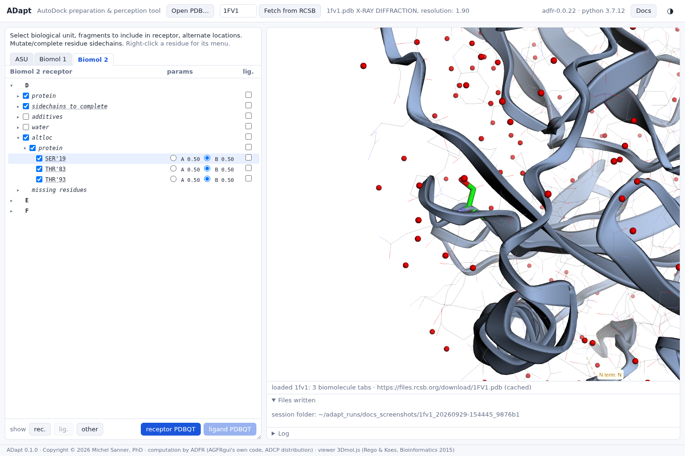
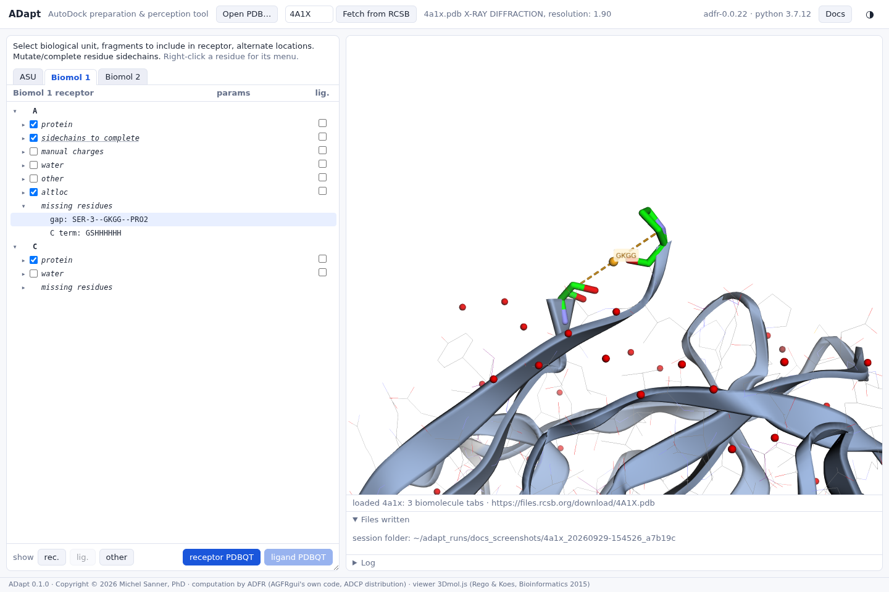

ADapt
The AutoDock preparation & perception tool: from a PDB entry to receptor and ligand files ready for docking with the AutoDock suite, in a web browser.

The problem
Docking programs have become fast and accessible enough to be used by a broad community, including occasional users. Their results, however, depend on the quality of the input. The receptor must be given to AutoDock in its own PDBQT format, and building that file from the data the Protein Data Bank provides is neither obvious nor free of pitfalls. A PDB file records a crystallographic experiment, not a molecule ready for docking. To prepare a receptor from it, you must understand what the file contains and make a series of choices:
- Asymmetric unit or biological assembly. The asymmetric unit (ASU) in the file is the smallest part of the crystal from which symmetry rebuilds the whole lattice. It can hold one molecule, part of one, or several copies. The biologically active molecule may be larger, smaller or different, and often has to be built by applying the symmetry operations the file lists. For docking, it is usually the assembly that matters.
- Missing atoms and residues. Atoms without electron density are absent. Far from the docking site this can be ignored. In or near the site it cannot: missing side-chain atoms of standard amino acids can be rebuilt with reasonable confidence from a rotamer library, while missing loops are something to know about.
- Alternate locations. Side chains, loops or ligands seen in several conformations are given as alternate locations (altlocs). One must be chosen, or the side chain considered flexible.
- Cofactors, ligands, additives and water. Cofactors usually stay in the receptor, since a docked molecule may interact with them. A ligand is usually removed, since the docked molecule may take its place. Crystallization additives and waters are usually removed.
- Metals and ions. Near the site they matter, and the AutoDock force field needs a formal charge on them for their electrostatics.
- Unsupported atom types. AutoDock 4.1 is parametrized for a finite set of elements. An atom outside that set far from the site can simply be left out; near the site it needs thought.
Most of these choices depend on where a fragment sits relative to the pocket you intend to dock into, so they are best made while looking at the structure.
What ADapt does
ADapt reads a PDB file, or fetches it from the RCSB, and analyses it with ADFR's own code, the same code as the PDB analyzer of AutoGridFR's graphical interface (AGFRgui):
- it builds every biological assembly the file defines, one tab each, next to the ASU;
- it classifies every residue by what it is and what it needs (see the categories), and proposes the usual choices as defaults;
- it presents each chain as a tree that is linked to a 3D view. Clicking a node shows the fragment in the structure, so every choice can be made in context;
- it writes the receptor PDBQT (hydrogens added by reduce, Gasteiger charges, AutoDock
atom types) and one ligand PDBQT per selected fragment. Both files carry
REMARK 850records listing what was done to the PDB data (see provenance), and each session keeps a record of every choice.
What is known to be wrong or missing, in ADapt and in the ADFR code it runs, is listed on one page: Known issues.
The receptor files ADapt writes are byte-identical to those of ADFR's command line
(agfr --toPdbqt) for the same choices, except for one line ADapt adds to each file to
record which biomolecule was used. ADapt's test suite checks this.
The interface
- Open PDB… reads a local
.pdb,.ent,.pdb.gzor.ent.gzfile. Dropping a file on the page does the same. - Fetch from RCSB: type a PDB id and press Enter.
- The entry, its experiment and its resolution.
- One tab per construct: the ASU and every biological assembly (Biomol 1, 2, …). The tab selects the molecule that will be written.
- The tree: chains, then categories of residues, then residues. The first checkbox column puts a fragment in the receptor.
- params: per-residue settings (alternate location, rotamer, ion charge).
- lig.: the second checkbox column puts a fragment in the ligand.
- show rec. / lig. / other highlights, in the 3D view, what is currently in the receptor, in the ligand, or in neither.
- receptor PDBQT and ligand PDBQT write the files and download them.
- The 3D view (3Dmol.js). Receptor atoms have grey carbons, ligand atoms orange sticks; symmetry copies are drawn translucent; missing residues are drawn in orange. Clicking a tree node highlights its atoms in green and centres the view on them (see The tree and the 3D view).
- The status line: what was loaded, highlighted or written.
- Files written (with download links and the session folder) and the Log of ADFR's messages.
Right-clicking a residue opens its menu: complete a side chain or leave it as is, or mutate the residue. The Docs button at the top right opens this documentation.
Fragment categories
Under each chain, residues are grouped by category. A category's checkbox shows whether its residues are in the receptor: checked, unchecked, or partly checked. Clicking it applies to all of them.
| Category | What it holds | In the receptor by default |
|---|---|---|
| protein | Complete standard amino acids. | yes |
| nucleic | Nucleic acid residues. | yes |
| sidechains to complete | Standard amino acids whose missing side-chain atoms can be rebuilt from the rotamer library. | yes, with the best-scoring rotamer |
| missing atoms | Other residues with missing atoms (for instance backbone atoms). | yes, as they are |
| cofactors | Residues in ADFR's table of cofactors. | yes |
| modified | Residues the file declares as modified (MODRES records). | yes |
| manual charges | Single-atom ions that AutoDock supports but that the Gasteiger charge model cannot charge (Zn, Mg, Ca, Fe, Mn; also Br). They get a formal charge (see metals). | no |
| ligands | Residues that ADFR's table of PDB entries lists as ligands of this entry. | no |
| additives | Crystallization additives: GOL, EDO, SO4, PO4, PEG, DMS, ACT and others. | no |
| water | Water molecules. | no |
| other | Anything not in the categories above. | no |
A chain can also have three sub-groups:
- altloc holds the residues that have alternate locations, sorted into the same categories (see alternate locations).
- unknown atom types holds residues with atoms outside the AutoDock 4.1 types. It is for information only (see unsupported atoms).
- missing residues lists stretches the file reports as missing (see missing residues).
Cases
Each page below walks through one situation with a PDB entry that shows it. Every entry can be fetched by its id to follow along.

Biological assembly, not the ASU1HHP, HIV-1 protease: the ASU holds half of the enzyme.
Choosing between assemblies1FV1: two copies of one complex in one file.
Missing side chainsRebuild them from rotamers, or leave them as they are.
Alternate locationsPick the conformation to dock against. Ligands and other hetero groups6GGD: take the ligand out of the receptor.
Ligands and other hetero groups6GGD: take the ligand out of the receptor.
 Metals, ions, unsupported atomsA zinc charge; a copper AutoDock cannot type.
Metals, ions, unsupported atomsA zinc charge; a copper AutoDock cannot type.

Missing residues4A1X: gaps and missing termini, in the tree and in 3D. Mutating residuesReplace a residue by any standard amino acid.
Mutating residuesReplace a residue by any standard amino acid.
 Writing the PDBQT filesWhat is written, and how it is recorded.
Provenance in the PDBQT filesEvery REMARK record, and how to rebuild a receptor from it.
Writing the PDBQT filesWhat is written, and how it is recorded.
Provenance in the PDBQT filesEvery REMARK record, and how to rebuild a receptor from it.
References
- Ravindranath PA, Forli S, Goodsell DS, Olson AJ, Sanner MF. AutoDockFR: advances in protein-ligand docking with explicitly specified binding site flexibility. PLoS Comput Biol 11(12):e1004586, 2015.
- Morris GM, Huey R, Lindstrom W, Sanner MF, Belew RK, Goodsell DS, Olson AJ. AutoDock4 and AutoDockTools4: automated docking with selective receptor flexibility. J Comput Chem 30(16):2785-2791, 2009.
- Forli S, Huey R, Pique ME, Sanner MF, Goodsell DS, Olson AJ. Computational protein-ligand docking and virtual drug screening with the AutoDock suite. Nat Protoc 11(5):905-919, 2016.
- Zhang Y, Sanner MF. AutoDock CrankPep: combining folding and docking to predict protein-peptide complexes. Bioinformatics 35(24):5121-5127, 2019.
- Word JM, Lovell SC, Richardson JS, Richardson DC. Asparagine and glutamine: using hydrogen atom contacts in the choice of side-chain amide orientation. J Mol Biol 285(4):1735-1747, 1999 (reduce).
- O'Boyle NM, Banck M, James CA, Morley C, Vandermeersch T, Hutchison GR. Open Babel: an open chemical toolbox. J Cheminform 3:33, 2011.
- Gasteiger J, Marsili M. Iterative partial equalization of orbital electronegativity: a rapid access to atomic charges. Tetrahedron 36(22):3219-3228, 1980.
- Rego N, Koes D. 3Dmol.js: molecular visualization with WebGL. Bioinformatics 31(8):1322-1324, 2015.